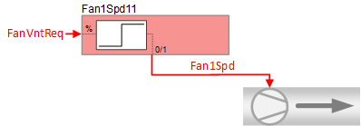
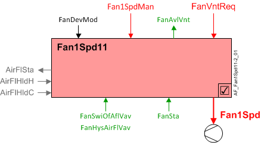
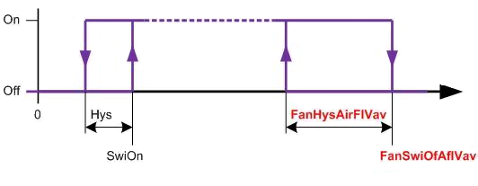
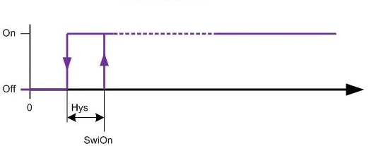
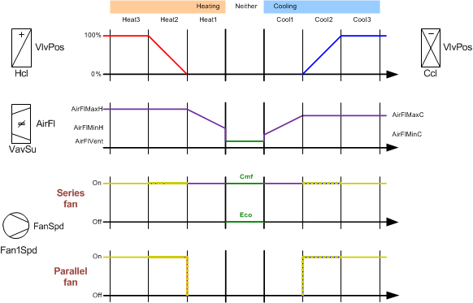

Single-speed fan (Fan1Spd11)
 | This application function operates a single speed fan. The fan binary command is calculated based on request signal for ventilation. This application function is typically configured for fan coil unit. Can also support a series or parallel fan-powered VAV box, or a heat pump. There is an optional binary input for the fan state. This application function is NOT available for: |
Required elements and how to configure them:
Element | I/O | Signal type |
|---|---|---|
Fan1Spd "Single-speed fan" | On-board output, Fan speed | 1-Stage Normally open |
Function
The figure below shows BACnet objects associated with this application function. Primary signal flow is summarized as follows:
Basic function: Accept request signal from associated room controller and pass it through a device mode logic switch; Output the result as a command to the BACnet object that controls the device.

| Command or request (or related) |
| Notification of condition or status, or availability |
| Device mode |
| Interlock (internal signal, not a BACnet object; see Interlocks section for additional information) |


Interlocks
Room automation interlocks are internal signals that coordinate interaction between HVAC devices. They are not visible in ABT Site or web interface, but parameters associated with them are. See comment column for hints on parameters that affect interlock functionality.
Signal | Type | Direction | Description | Comment |
|---|---|---|---|---|
AirFlCReq | Boolean | In | Air flow cooling request |
|
AirFlHReq | Boolean | In | Air flow heating request |
|
AirFlDhuReq | Boolean | In | Air flow dehumidification request |
|
AirFlVntReq | Boolean | In | Air flow ventilation request |
|
AirFlHldC | Boolean | In | Air flow hold for cooling |
|
AirFlHldH | Boolean | In | Air flow hold for heating |
|
AirFlSta | Boolean | Out | Air flow status | See Configuration section for parameters named "...AirFlSta". |
AirFlVavReq | % | In | Air flow vav request | Fan-powered box application. |
FanManOff | Boolean | Out | Fan manual off |
|
Single speed fan operation
Parallel fan (FanSprtVav = "On request"):

Series fan (FanSprtVav = "Continuous on"):

Ventilation request - When FanDevMod is "Control mode" the fan is available for ventilation request (FanAvlVnt = Yes). When a ventilation request (FanVntReq) is greater than 4%, Fan1Spd = On. (Switch-off hysteresis to turn fan off is 2%.)
If device mode is not Control mode, FanVntReq has no effect.
Note
This feature ensures that the fan can provide a minimum ventilation air flow when there is little or no heating or cooling demand, such as in the "Neutral" zone during temperature sequencing.
Temperature sequencing
The figure shows temperature sequencing for heating and cooling:

Configuration
 Objects
Objects
Description | Object | Type | Default value |
|---|---|---|---|
Switch-off point for fan on VAV request | FanSwiOfAflVav | ACnfVal | 50 [] 1), 2) |
Hysteresis for fan on VAV request | FanHysAirFlVav | ACnfVal | 10 [] 1), 2) |
1) Value is taken as [m3/h] for pressure independent VAV control
2) Value is taken as [%] for pressure dependent VAV control
 Parameters
Parameters
Description | Parameter | Default value |
|---|---|---|
Enable state input 0:No | EnStaIn | 0:No |
Interlocks | ||
Switch-on delay for air volume flow state | DlyOnAirFlSta | 30 [s] |
Fan support for variable air volume box 1:No (fan coil unit or heat pump) | FanSprtVav | 3:Continuous on |
Enable fan operation before heating coil 0:No | EnFanOpBfHcl | 0:No |
Interface
Interface | Description | Type | Ref. | Owned by |
|---|---|---|---|---|
Fan1Spd | Single-speed fan | BO | ◉ | Room segment / Device |
FanSta | Fan state Note | BI | ◉ | Room segment / Device |
Fan1SpdMan | Manual single-speed fan 0:Off | BPrcVal | ● | - |
FanDevMod | Fan device mode 1:Off | MPrcVal | ● | - |
FanCReq | Fan cooling request | ACalcVal | ● | - |
FanHReq | Fan heating request | ACalcVal | ● | - |
FanVntReq | Fan ventilation request | ACalcVal | ● | - |
FanAvlC | Fan available for cooling 0:No | BCalcVal | ● | - |
FanAvlH | Fan available for heating 0:No | BCalcVal | ● | - |
FanAvlVnt | Fan available for ventilation 0:No | BCalcVal | ● | - |
FanSwiOfAflVav | Switch-off point for fan on VAV request | ACnfVal | ● | - |
FanHysAirFlVav | Hysteresis for fan on VAV request | ACnfVal | ● | - |
Engineering and commissioning
See Configuration section for how to configure FanSwiOfAflVav and FanSprtVav with fan powered box.
Parameter EnStaIn must be set to 1:Yes if a binary fan status input is used.